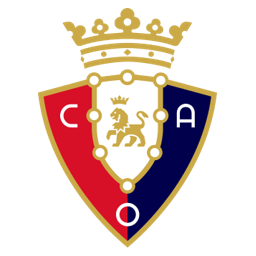
OSEl club-socios de Navarra
CA Osasuna
1920
Año de fundación del club
Rojillos
Una breve historia
Fundado en 1920 en Pamplona, Osasuna es un club propiedad de sus socios (más de 20,000), sin accionistas externos. Su hinchada y El Sadar tienen fama de ser uno de los ambientes más intensos de LaLiga.
Fieles a los colores
de Pamplona
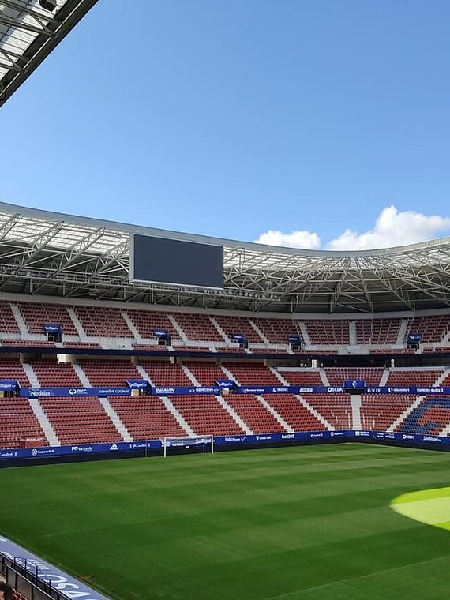
📷Foto pendiente
(osasuna-1.jpg)';" />
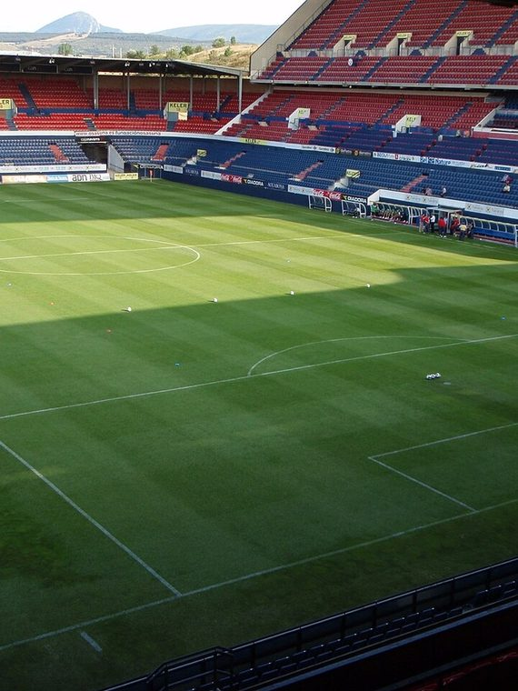
📷Foto pendiente
(osasuna-2.jpg)';" />
Títulos y logros
Momentos que hicieron historia
★
Finalista de la Copa del Rey en 2004/05
★
Semifinalista de la UEFA Cup en 2005/06
★
Uno de los pocos clubes de LaLiga gestionado 100% por sus socios
La rivalidad
El duelo que enciende a la afición
Temporada 2026 / 27
Plantilla del primer equipo
Datos de ejemplo — reemplázalos con la plantilla real en data/teams.js.
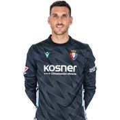
🧑';" /> S. Herrera Portero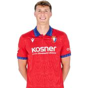
🧑';" /> Herrando Defensa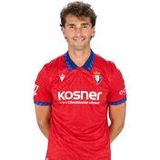
🧑';" /> Torró Centrocampista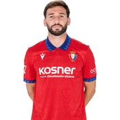
🧑';" /> Moncayola Centrocampista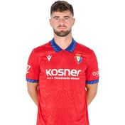
🧑';" /> Iker Muñoz Centrocampista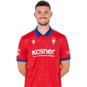
🧑';" /> Raúl Delantero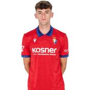
🧑';" /> Aimar Delantero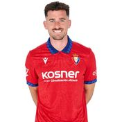
🧑';" /> Kike Barja Delantero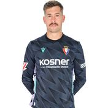
🧑';" /> Aitor Fdez. Portero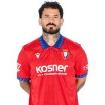
🧑';" /> Rubén García Delantero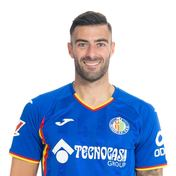
🧑';" /> Rico Defensa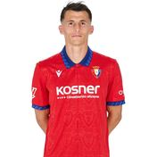
🧑';" /> Budimir Delantero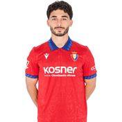
🧑';" /> Moro Centrocampista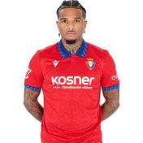
🧑';" /> V. Rosier Defensa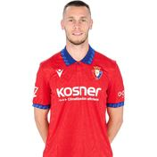
🧑';" /> Dubasin Centrocampista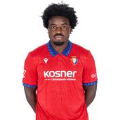
🧑';" /> Boyomo Defensa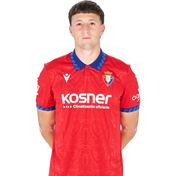
🧑';" /> Abel Bretones Centrocampista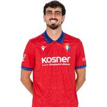
🧑';" /> Catena Defensa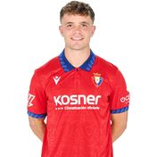
🧑';" /> Mauro Centrocampista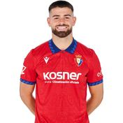
🧑';" /> Arguibide Defensa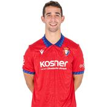
🧑';" /> A. Osambela Centrocampista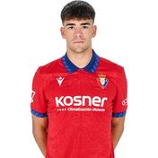
🧑';" /> A. Bonel Delantero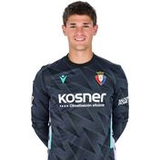
🧑';" /> Rafa Fdez. Portero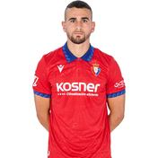
🧑';" /> Santos Defensa